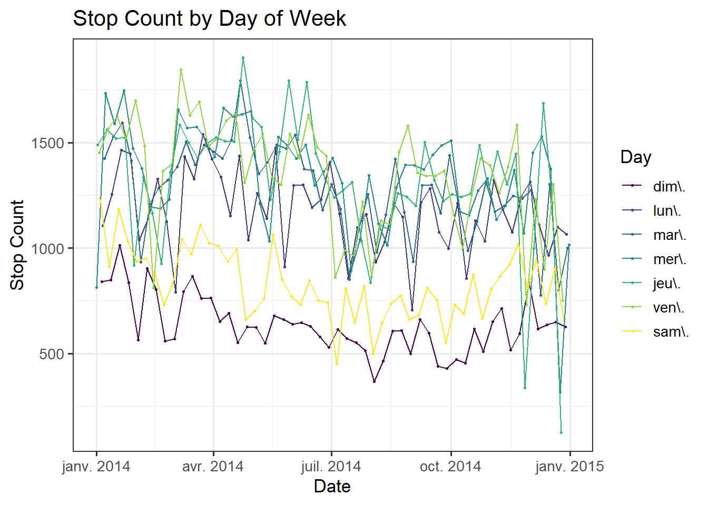
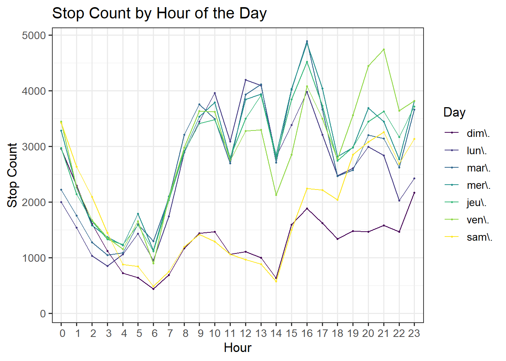
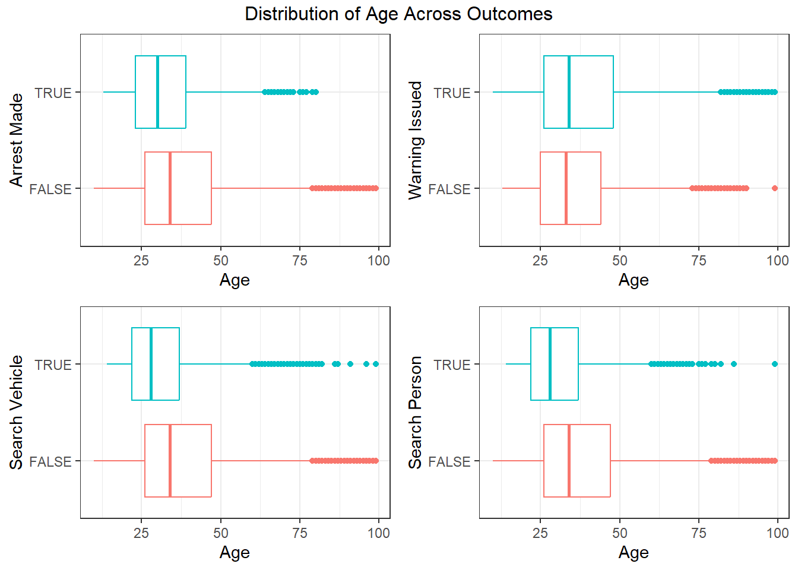
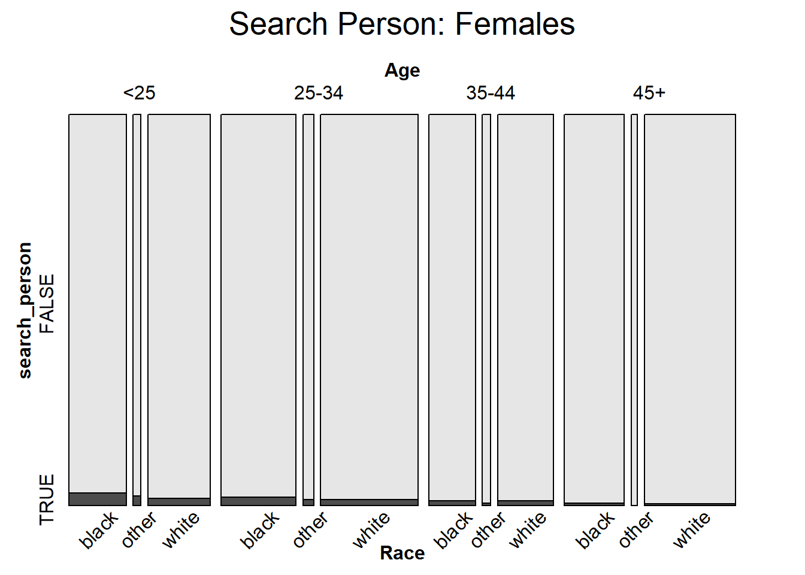
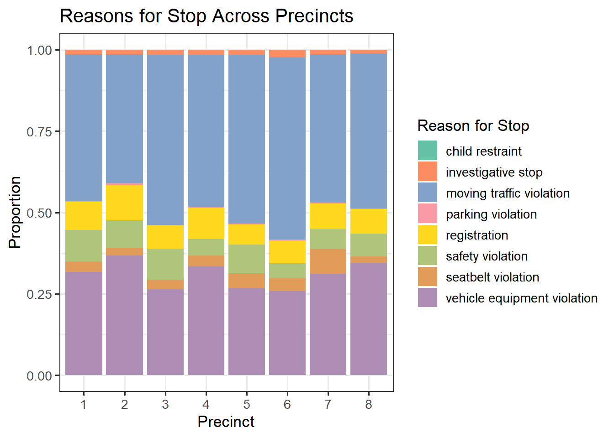
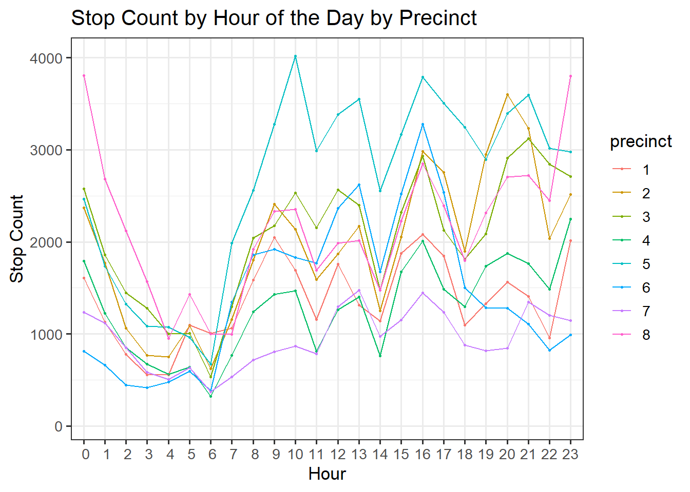

In this section, our analysis is restricted to Nashville traffic stop data in 2014.
3.1 Temporal Aspects
Code
nashville |>mutate(Day =wday(date, label =TRUE)) |>group_by(date, Day) |>summarise(count =n()) |>ggplot(aes(x = date, y = count, color = Day)) +geom_point(size =0.5) +geom_line() +theme_bw(13) +labs(x ="Date", y ="Stop Count") +ggtitle("Stop Count by Day of Week")

The first step of our exploratory data analysis involves seeing how the number of traffic stops evolved throughout 2014. Since traffic, and therefore driving habits, varies heavily by seasonal factors as well as daily habits, we plot a line graph segmented by day of the week. We see that there are clearly fewer traffic stops occurring on the weekend, which makes sense since there are fewer cars on the road then. There is also no rush hour traffic and its associated stress. There are three outliers to this trend, indicated by the very few traffic stops occuring on Thanksgiving, Christmas Eve, and Christmas Day.
Code
nashville |>mutate(Day =wday(date, label =TRUE),Hour =hour(time)) |>group_by(Day, Hour) |>summarise(count =n()) |>ggplot(aes(x = Hour, y = count, color = Day)) +geom_point(size =0.5) +geom_line() +theme_bw(13) +scale_x_discrete(limits=0:23) +labs(x ="Hour", y ="Stop Count") +ggtitle("Stop Count by Hour of the Day")

We also include the breakdown by hour of day, which verifies our intuition that there are fewer stops during the early morning hours and a spike in stops during rush hours from 9-10AM and 4-5PM. Note that there is also a spike in stops during lunch hour on weekdays (12-1PM) and dinner hour on Fridays only (8-9PM).
3.2 Demographic Data
One of our main areas of interest is the demographic features of the people stopped.
Now we shift the analysis from the number of stops to the type of violation and its outcome. A primary area of interest is how demographic data is linked to these variables. Above is a stacked bar chart comparing the type of violations between genders. The global percentage of female violations is 41.2%, indicated by the vertical black line. Based on this, we see that women are overrepresented in the child restraint category, which deals with proper safety seats/infant carriers for children. Men are overrepresented in seatbelt violations, parking violations, and investigative stops. The remaining categories are very close to the global average.
Code
p1 <- nashville |>select(arrest_made, subject_age) |>rename("Age"= subject_age) |>drop_na() |>ggplot(aes(y = arrest_made, x = Age, color = arrest_made)) +geom_boxplot() +labs(y ="Arrest Made") +theme_bw() +theme(legend.position="none") p2 <- nashville |>select(warning_issued, subject_age) |>rename("Age"= subject_age) |>drop_na() |>ggplot(aes(y = warning_issued, x = Age, color = warning_issued)) +geom_boxplot() +labs(y ="Warning Issued") +theme_bw() +theme(legend.position="none") p3 <- nashville |>select(search_vehicle, subject_age) |>rename("Age"= subject_age) |>drop_na() |>ggplot(aes(y = search_vehicle, x = Age, color = search_vehicle)) +geom_boxplot() +labs(y ="Search Vehicle") +theme_bw() +theme(legend.position="none") p4 <- nashville |>select(search_person, subject_age) |>rename("Age"= subject_age) |>drop_na() |>ggplot(aes(y = search_person, x = Age, color = search_person)) +geom_boxplot() +labs(y ="Search Person") +theme_bw() +theme(legend.position="none") grid.arrange(p1, p2, p3, p4, top ="Distribution of Age Across Outcomes")

The boxplots above show how age varies between different outcomes, including warnings, arrests, and searches. We see that overall the distrution of people is younger if there was an arrest made or the driver or car was searched. However, if only a warning was issued, the person is likely to be older. This implies that younger people receive harsher treatment at traffic stops, while people who receive a warning are older.
We wish to see a breakdown of all of the outcomes by race and gender, which is shown in the parallel coordinates plot above. (Note that the colors are paired by race.) From the graph, it is evident that men of color are the most likely to be frisked or searched. Hispanic and Black men are the top group in 5 out of the 7 outcomes, while Asian/Pacific Islander women are at the bottom for these outomes. Men are almost always ranked above their female conterparts, except when a citation or warning is issued. Additionally, we see a trade-off between citations and warnings, where low citation rates correspond to high warning rates and vice versa. Intuitively this makes sense, since warnings are a laxer outcome compared to a formal citation.
Note that we kept all of the original race categories from the data for this plot. Since there are very few observations in the Hispanic, AAPI, other, and unknown groups, moving forward we will group the races according to White/Black/Other.
mosaic(search_person ~ Age + Race, female_xtabs, direction =c("v", "v", "h"),rot_labels =c(0, 0, 45, 90),main ="Search Person: Females")

After we have considered race, age, and gender separately, a mosaic plot can help us visualize all of these variables simultaneously. Here the response variable is if the driver was searched or not. Between the two plots, it is clear that women are searched less frequently than men across all age and race categories. In general, older people are searched with a smaller proportion, and Black individuals are searched with the greatest proportion in every subcategory.
3.3 Geographic Elements
Nashville is broken up into eight precincts. We will analyze the variation between precincts in this section.
Code
nashville |>filter(precinct %in%as.character(1:8)) |>select(precinct, reason_for_stop) |>rename("Reason for Stop"= reason_for_stop) |>drop_na() |>ggplot(aes(x = precinct, fill =`Reason for Stop`)) +geom_bar(position='fill') +labs(x ="Precinct", y ="Proportion") +ggtitle("Reasons for Stop Across Precincts") +scale_fill_manual(values =c("#66c2a5", "#fc8d62", "#82A2CA", "#f99aa4", "#ffd920", "#aec57b", "#e19c5a", "#ad8db3"),name ="Reason for Stop") +theme_bw(13)

In the stacked bar chart above, we see different distributions of violations across precincts. Notably, precinct 6 has the greatest proportion of moving traffic violations, and precinct 3 has the smallest proportion of vehicle equipment violations. Precinct 7 has the biggest proportion of seatbelt violations. These differences may be due to the factors such as the layout of the city, the amount of traffic, and how urban the precincts are.
Code
nashville |>filter(precinct %in%as.character(1:8)) |>mutate(Hour =hour(time)) |>group_by(Hour, precinct) |>summarise(count =n()) |>ggplot(aes(x = Hour, y = count, color = precinct)) +geom_point(size =0.5) +geom_line() +theme_bw(13) +scale_x_discrete(limits=0:23) +labs(x ="Hour", y ="Stop Count") +ggtitle("Stop Count by Hour of the Day by Precinct")

The differences in precinct are evident by looking at the number of stops by hour segmented by precinct. Clearly, precinct 5 has the most stops during daytime hours (7AM-4PM) but fewer stops for the rest of the day. Conversely, precinct 8 has a medium number of stops during the daytime but the most stops during odd hours such as around midnight. These trends likely reflect both the patrolling patterns of police and the traffic waves in certain areas of the city.
From the stacked barplot above, we see that the distribution of races also varies by precinct. Precinct 6 has the highest proportion of Black individuals stopped, while precinct 1 has the greatest proportion of White drivers stopped. Visualizing these differences can show the bigger picture of the populations of neighborhoods in Nashville.
Finally, we compare the breakdown of outcomes by precinct. We see that precinct 7 is where individuals are the most likely to be searched. Precinct 4 has the lowest rates of searches and warnings but the highest likelihood of a citation issued. This plot also verifies the tradeoff between citations and warnings that was shown in the parallel coordinates plot by race. Precincts with a high rate of citations also have a low rate of warnings, and the converse holds. To see this, note the trends exhibited by precincts 2 and 4.